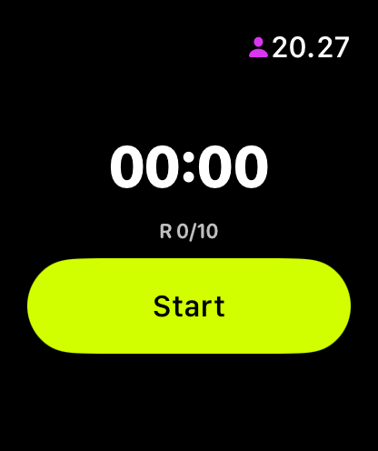
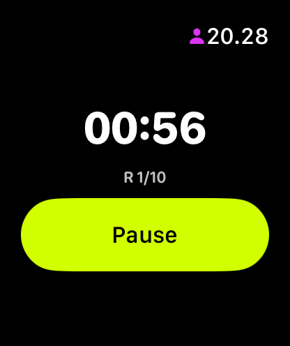

Votre minuteur au poignet
Minuteur Apple
Watch Workout
Démarrez un minuteur EMOM ou d'intervalles sur iPhone et suivez le compte à rebours sur Apple Watch, synchronisé en temps réel via WatchConnectivity. Chaque changement de tour donne un tap haptique au poignet, vous savez exactement quand changer. Ou laissez le téléphone : la Watch règle et lance EMOM et Intervals toute seule. Sans compte, sans abonnement.
2,99 € achat unique · iOS 16 ou version ultérieure
L'app Watch s'installe automatiquement avec l'app iPhone
Trois états. Un coup d'œil.
L'app Watch montre exactement ce dont vous avez besoin : si vous êtes en work ou en rest, le temps qu'il en reste et le tour. Rien d'autre. Si vous réglez la séance sur la Watch, Start et Pause y sont. Si vous suivez une séance lancée sur l'iPhone, les commandes restent sur le téléphone.


Comment ça fonctionne
-
iPhone → Watch
Démarrez un entraînement sur iPhone et la Watch prend le relais instantanément via WatchConnectivity. Même tour, même compte à rebours, même état. Mettez en pause sur iPhone et la Watch se met aussi en pause.
-
Mode autonome
Pas d'iPhone à proximité ? La Watch règle et lance EMOM et Intervals toute seule, avec les tours, la durée du tour, le work et le rest réglables au poignet. For Time se lance sur l'iPhone, et la Watch suit.
-
Retour haptique
Sentez chaque changement de tour au poignet. Signal de départ, changements de tour et un tap de succès à la fin. Même dans une salle bruyante, vous savez toujours où vous en êtes.
-
Apple Health
Une séance terminée sur iPhone ou iPad est enregistrée dans Apple Health comme séance HIIT, si vous l'autorisez. La Watch n'écrit pas elle-même dans Apple Health.
WODrounds au poignet
Téléchargez sur iPhone. L'app Watch s'installe automatiquement.
2,99 € achat unique · iOS 16 ou version ultérieure
Nécessite watchOS 9 ou ultérieur